Clavis Polygraphiae
Key to the Polygraphia
prdl-70282_clavis-polygraphiae-ioannis-trithemii-abbatis-diui · Style C / Cipher-grid matrices
Clavis Polygraphiae (1518 (companion key), [Oppenheim]) -- Cipher-grid tables (Style C)
Source witness: Bayerische Staatsbibliothek (BSB) München, via MDZ digital library. Standalone Clavis (key). The substitution tables here are the same scheme as in the Polygraphia VI editions, but presented for direct decipherment use.
What you are looking at
These chunks render Trithemius's tabular ciphers -- structurally different from the verbal-substitution columns of the cipher-key set. Three families recur:
- Expansion-figure matrices (Prima / Secunda / Tertia / Quarta figura expansionis tabulae) -- bigram-pair tables and alphabet-rotation grids that derive new alphabets from a base alphabet by transposition.
- Orchema numerale -- a 24x24 numerical-substitution matrix in Polygraphia VI book six, indexed by Latin letters on both axes with numbers 6-29 in the body. Trithemius's own note describes the diagonals as an 'infinite leap' (transversaliter a quatuor angulis).
- Spirit-army hierarchies -- positional tables of demonic ranks (Oriens / Duxes majoris / Duxes minoris / Subduces) from the Steganographia tradition; structurally tabular but not a cipher in the strict substitution-table sense.
How the renderer chose its layout
Each source section is tokenised row-by-row. When most rows have the same cell count (and that count is <= 28), the renderer emits a markdown table; otherwise it preserves the source layout as a fenced code block. Trithemius's own commentary (where it appears in long Latin prose between figures) is lifted out into a blockquote. -- marks an OCR-illegible cell.
Honest limits
- Identical-rows artefact: the printed Polygraphia VI expansion figures display Caesar-rotated alphabets, but the OCR frequently linearises them to identical rows (each row = the plain alphabet). The renderer surfaces what the OCR sees; the original rotation is recoverable only by inspecting the facsimile image.
- Header detection is heuristic: lines matching figure-header patterns are lifted out, but a header buried in continuous prose may be missed.
- This work contributes 11 cipher-grid chunks.
Provenance
Auto-generated from the OCR'd source by scripts/render_style_cipher_grid.py. Phase 0.5 manual reclassification moved 43 expansion-figure chunks from cipher-key to cipher-grid (see scripts/reclassify_expansion_figures.py).
Per-chunk renderings
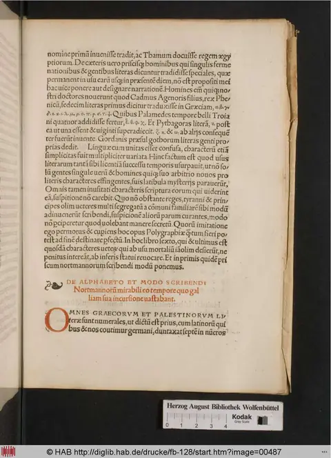
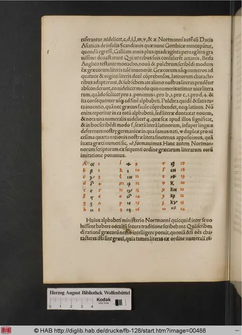
Clavis Polygraphiae — cipher-grid chunk full_chunk_0092
Trithemius's tabular ciphers — the alphabet-rotation expansion figures (tabula recta / auersa / aucta), bigram grids, and the numerical Orchema. The source facsimile is shown alongside and is authoritative for the cipher. Where the OCR preserved the rows they are transcribed as a table (illegible cells marked —, OCR noise left visible); where it linearised the paired plaintext/cipher columns into identical rows, the misleading grid is omitted in favour of the facsimile. These figures are worked examples, not a single mechanical grid.
Prima figura expansionis tabulae recte.
On the printed page this figure is laid out as paired columns — a plaintext alphabet beside its cipher alphabet, set out as worked examples rather than as one mechanical grid. The OCR linearised those columns into identical rows and cannot preserve the layout, so no transcribed grid is shown here. Read the source facsimile alongside - it is authoritative for this figure.
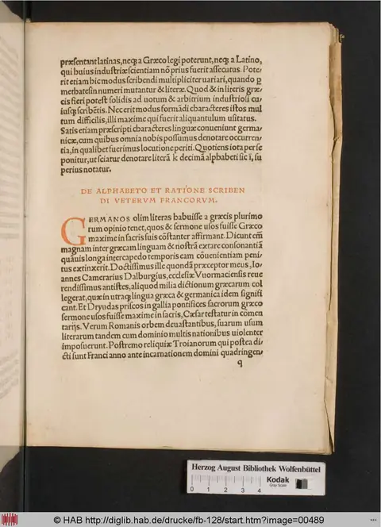
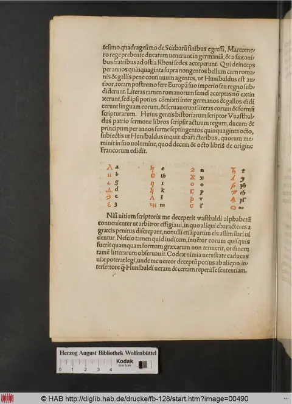
Clavis Polygraphiae — cipher-grid chunk full_chunk_0093
Trithemius's tabular ciphers — the alphabet-rotation expansion figures (tabula recta / auersa / aucta), bigram grids, and the numerical Orchema. The source facsimile is shown alongside and is authoritative for the cipher. Where the OCR preserved the rows they are transcribed as a table (illegible cells marked —, OCR noise left visible); where it linearised the paired plaintext/cipher columns into identical rows, the misleading grid is omitted in favour of the facsimile. These figures are worked examples, not a single mechanical grid.
Secunda figura expansionis tabulae rectae
| c1 | c2 | c3 | c4 | c5 |
|---|---|---|---|---|
ag |
ab |
af |
ak |
al |
bb |
bi |
bk |
bl |
cm |
cc |
ck |
dl |
dm |
cn |
dd |
cl |
em |
en |
dp |
ee |
dm |
fn |
fo |
eq |
ff |
fn |
go |
gp |
qr |
gg |
fp |
hp |
hr |
rs |
hh |
fs |
ip |
is |
st |
ii |
gt |
js |
kt |
tu |
jj |
gt |
kt |
lu |
uv |
kk |
gt |
kt |
lu |
uv |
ll |
gt |
kt |
lu |
uv |
mm |
gt |
kt |
lu |
uv |
nn |
gt |
kt |
lu |
uv |
oo |
gt |
kt |
lu |
uv |
pp |
gt |
kt |
lu |
uv |
qq |
gt |
kt |
lu |
uv |
rr |
gt |
kt |
lu |
uv |
ss |
gt |
kt |
lu |
uv |
tt |
gt |
kt |
lu |
uv |
uu |
gt |
kt |
lu |
uv |
vv |
gt |
kt |
lu |
uv |
ww |
gt |
kt |
lu |
uv |
xx |
gt |
kt |
lu |
uv |
yy |
gt |
kt |
lu |
uv |
zz |
gt |
kt |
lu |
uv |
In hac secunda expansionis tabula rectae figura continetur similiter alphabeta numero quingentis qui bus per metathesin fieri et alia multa posseunt quorum positionem causa brevitas obmiliamus. Pugtily, apalspbw.gbgw.
| c1 | c2 |
|---|---|
Continetur |
expansio. |
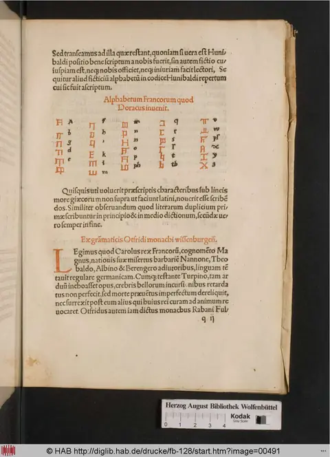
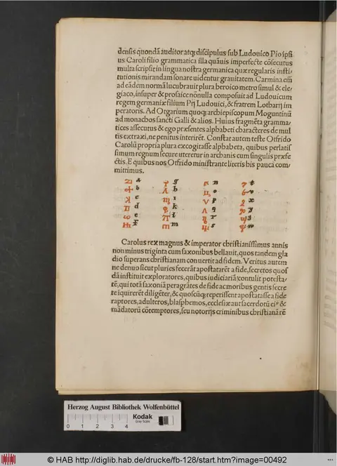
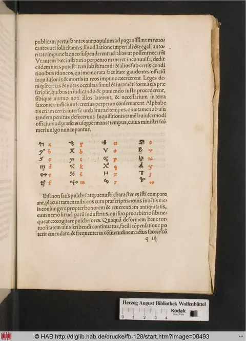
Clavis Polygraphiae — cipher-grid chunk full_chunk_0094
Trithemius's tabular ciphers — the alphabet-rotation expansion figures (tabula recta / auersa / aucta), bigram grids, and the numerical Orchema. The source facsimile is shown alongside and is authoritative for the cipher. Where the OCR preserved the rows they are transcribed as a table (illegible cells marked —, OCR noise left visible); where it linearised the paired plaintext/cipher columns into identical rows, the misleading grid is omitted in favour of the facsimile. These figures are worked examples, not a single mechanical grid.
Tertia figura expansionis tabularis recta.
On the printed page this figure is laid out as paired columns — a plaintext alphabet beside its cipher alphabet, set out as worked examples rather than as one mechanical grid. The OCR linearised those columns into identical rows and cannot preserve the layout, so no transcribed grid is shown here. Read the source facsimile alongside - it is authoritative for this figure.
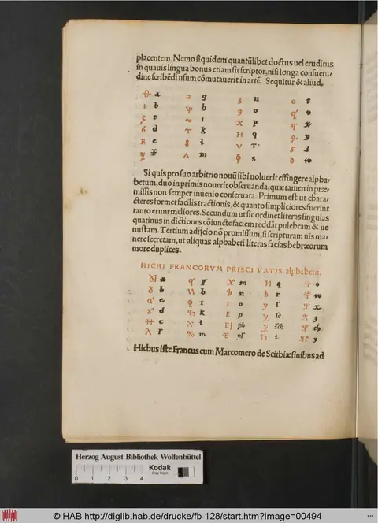
Clavis Polygraphiae — cipher-grid chunk full_chunk_0095
Trithemius's tabular ciphers — the alphabet-rotation expansion figures (tabula recta / auersa / aucta), bigram grids, and the numerical Orchema. The source facsimile is shown alongside and is authoritative for the cipher. Where the OCR preserved the rows they are transcribed as a table (illegible cells marked —, OCR noise left visible); where it linearised the paired plaintext/cipher columns into identical rows, the misleading grid is omitted in favour of the facsimile. These figures are worked examples, not a single mechanical grid.
Quarta figura expansionis tabula recta.
On the printed page this figure is laid out as paired columns — a plaintext alphabet beside its cipher alphabet, set out as worked examples rather than as one mechanical grid. The OCR linearised those columns into identical rows and cannot preserve the layout, so no transcribed grid is shown here. Read the source facsimile alongside - it is authoritative for this figure.
Clavis Polygraphiae — cipher-grid chunk full_chunk_0096
Trithemius's tabular ciphers — the alphabet-rotation expansion figures (tabula recta / auersa / aucta), bigram grids, and the numerical Orchema. The source facsimile is shown alongside and is authoritative for the cipher. Where the OCR preserved the rows they are transcribed as a table (illegible cells marked —, OCR noise left visible); where it linearised the paired plaintext/cipher columns into identical rows, the misleading grid is omitted in favour of the facsimile. These figures are worked examples, not a single mechanical grid.
Quinta figura expansionis tabula recte.
On the printed page this figure is laid out as paired columns — a plaintext alphabet beside its cipher alphabet, set out as worked examples rather than as one mechanical grid. The OCR linearised those columns into identical rows and cannot preserve the layout, so no transcribed grid is shown here. Read the source facsimile alongside - it is authoritative for this figure.
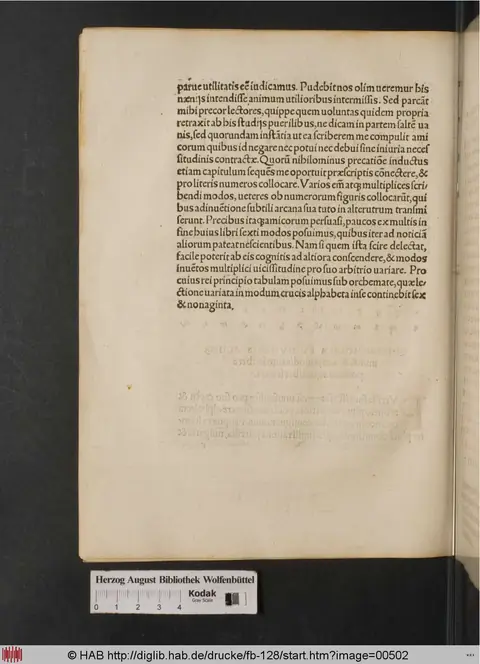
Clavis Polygraphiae — cipher-grid chunk full_chunk_0097
Trithemius's tabular ciphers — the alphabet-rotation expansion figures (tabula recta / auersa / aucta), bigram grids, and the numerical Orchema. The source facsimile is shown alongside and is authoritative for the cipher. Where the OCR preserved the rows they are transcribed as a table (illegible cells marked —, OCR noise left visible); where it linearised the paired plaintext/cipher columns into identical rows, the misleading grid is omitted in favour of the facsimile. These figures are worked examples, not a single mechanical grid.
Prima figura expansionis tabulae auctae:
On the printed page this figure is laid out as paired columns — a plaintext alphabet beside its cipher alphabet, set out as worked examples rather than as one mechanical grid. The OCR linearised those columns into identical rows and cannot preserve the layout, so no transcribed grid is shown here. Read the source facsimile alongside - it is authoritative for this figure.
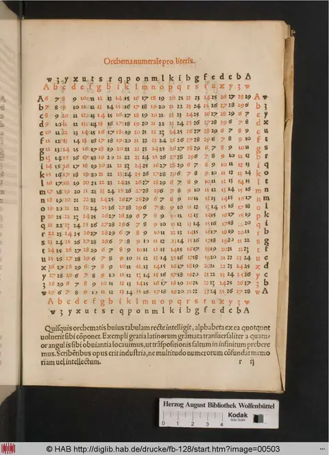
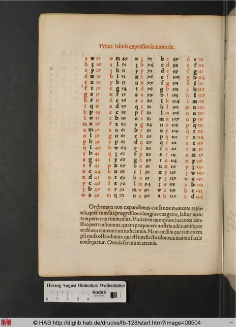
Clavis Polygraphiae — cipher-grid chunk full_chunk_0098
Trithemius's tabular ciphers — the alphabet-rotation expansion figures (tabula recta / auersa / aucta), bigram grids, and the numerical Orchema. The source facsimile is shown alongside and is authoritative for the cipher. Where the OCR preserved the rows they are transcribed as a table (illegible cells marked —, OCR noise left visible); where it linearised the paired plaintext/cipher columns into identical rows, the misleading grid is omitted in favour of the facsimile. These figures are worked examples, not a single mechanical grid.
Secunda figura expansionis tabulae auersae:
On the printed page this figure is laid out as paired columns — a plaintext alphabet beside its cipher alphabet, set out as worked examples rather than as one mechanical grid. The OCR linearised those columns into identical rows and cannot preserve the layout, so no transcribed grid is shown here. Read the source facsimile alongside - it is authoritative for this figure.
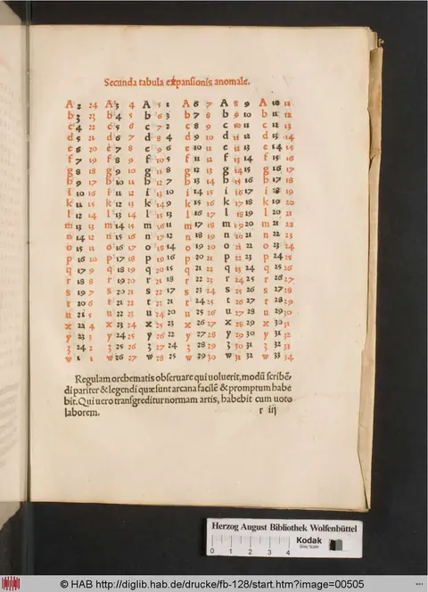
Clavis Polygraphiae — cipher-grid chunk full_chunk_0099
Trithemius's tabular ciphers — the alphabet-rotation expansion figures (tabula recta / auersa / aucta), bigram grids, and the numerical Orchema. The source facsimile is shown alongside and is authoritative for the cipher. Where the OCR preserved the rows they are transcribed as a table (illegible cells marked —, OCR noise left visible); where it linearised the paired plaintext/cipher columns into identical rows, the misleading grid is omitted in favour of the facsimile. These figures are worked examples, not a single mechanical grid.
Tertia figura expansionis tabula auctoris
On the printed page this figure is laid out as paired columns — a plaintext alphabet beside its cipher alphabet, set out as worked examples rather than as one mechanical grid. The OCR linearised those columns into identical rows and cannot preserve the layout, so no transcribed grid is shown here. Read the source facsimile alongside - it is authoritative for this figure.
Clavis Polygraphiae — cipher-grid chunk full_chunk_0100
Trithemius's tabular ciphers — the alphabet-rotation expansion figures (tabula recta / auersa / aucta), bigram grids, and the numerical Orchema. The source facsimile is shown alongside and is authoritative for the cipher. Where the OCR preserved the rows they are transcribed as a table (illegible cells marked —, OCR noise left visible); where it linearised the paired plaintext/cipher columns into identical rows, the misleading grid is omitted in favour of the facsimile. These figures are worked examples, not a single mechanical grid.
Source section 1
Quarta figura expansionis tabulae aueris:
On the printed page this figure is laid out as paired columns — a plaintext alphabet beside its cipher alphabet, set out as worked examples rather than as one mechanical grid. The OCR linearised those columns into identical rows and cannot preserve the layout, so no transcribed grid is shown here. Read the source facsimile alongside - it is authoritative for this figure.
Source section 2
Kodak
0 1 2 3 4
quinta figura expansionis tabulae auersa non sunt nisi duo prima in ordine alphabetica in ipam reficienda in quorum eclipsatur numero primo a. Reliquas uero quatuor pro exemplo poluimus, ut uolens materiam babeat pro uoto nova cudendi.
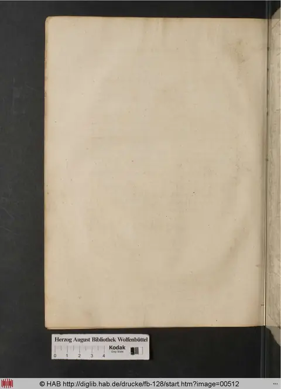
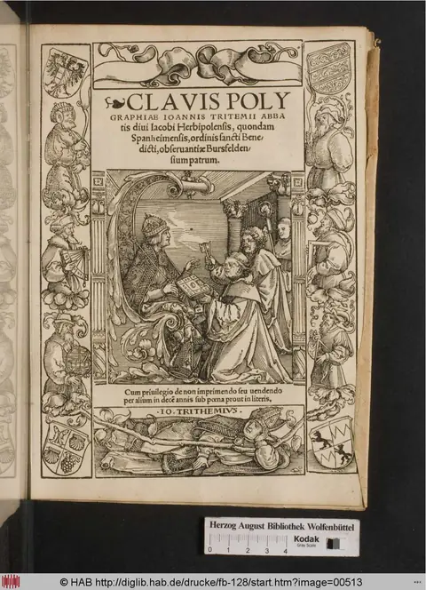
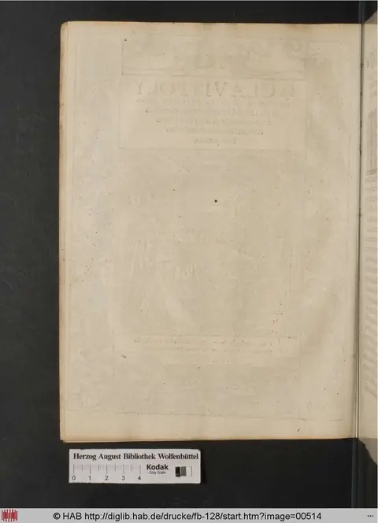
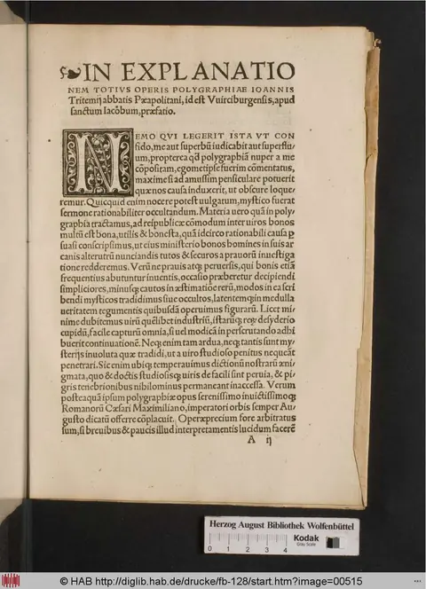
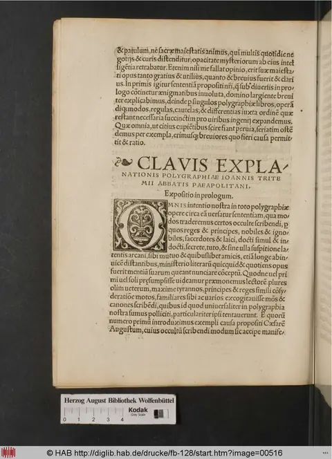
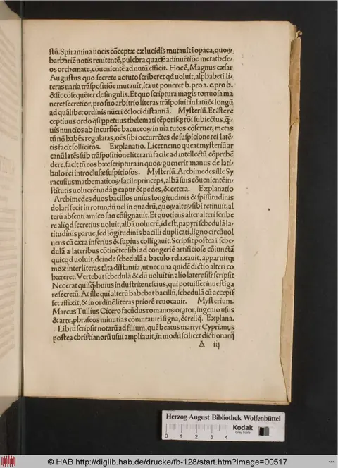
Clavis Polygraphiae — cipher-grid chunk full_chunk_0101
Trithemius's tabular ciphers — the alphabet-rotation expansion figures (tabula recta / auersa / aucta), bigram grids, and the numerical Orchema. The source facsimile is shown alongside and is authoritative for the cipher. Where the OCR preserved the rows they are transcribed as a table (illegible cells marked —, OCR noise left visible); where it linearised the paired plaintext/cipher columns into identical rows, the misleading grid is omitted in favour of the facsimile. These figures are worked examples, not a single mechanical grid.
On the printed page this figure is laid out as paired columns — a plaintext alphabet beside its cipher alphabet, set out as worked examples rather than as one mechanical grid. The OCR linearised those columns into identical rows and cannot preserve the layout, so no transcribed grid is shown here. Read the source facsimile alongside - it is authoritative for this figure.
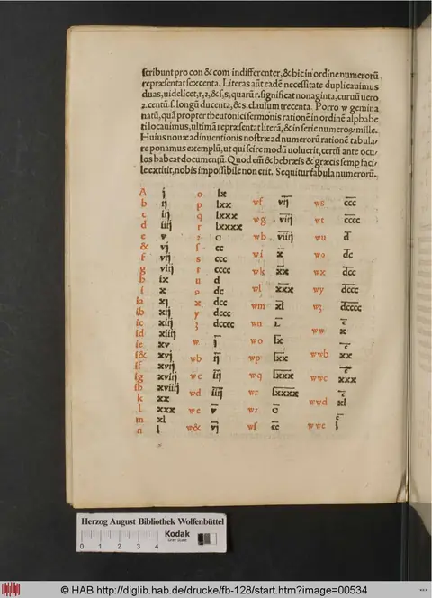
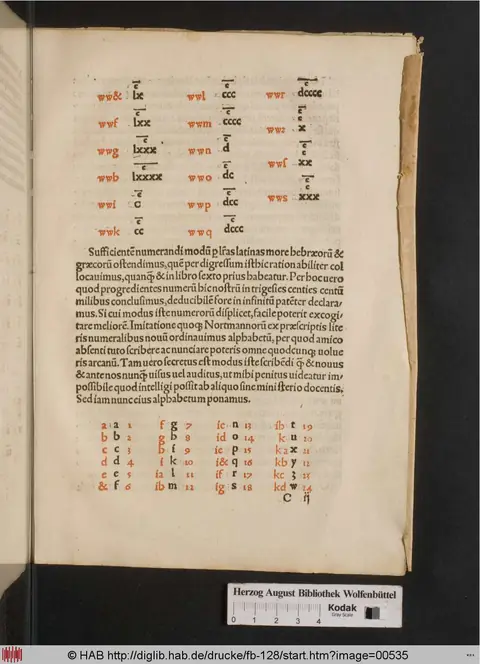
Clavis Polygraphiae — cipher-grid chunk full_chunk_0110
Trithemius's tabular ciphers — the alphabet-rotation expansion figures (tabula recta / auersa / aucta), bigram grids, and the numerical Orchema. The source facsimile is shown alongside and is authoritative for the cipher. Where the OCR preserved the rows they are transcribed as a table (illegible cells marked —, OCR noise left visible); where it linearised the paired plaintext/cipher columns into identical rows, the misleading grid is omitted in favour of the facsimile. These figures are worked examples, not a single mechanical grid.
Source section 1
On the printed page this figure is laid out as paired columns — a plaintext alphabet beside its cipher alphabet, set out as worked examples rather than as one mechanical grid. The OCR linearised those columns into identical rows and cannot preserve the layout, so no transcribed grid is shown here. Read the source facsimile alongside - it is authoritative for this figure.
Source section 2
| c1 | c2 | c3 | c4 |
|---|---|---|---|
Prima |
tabula |
expansionis |
anomale. |